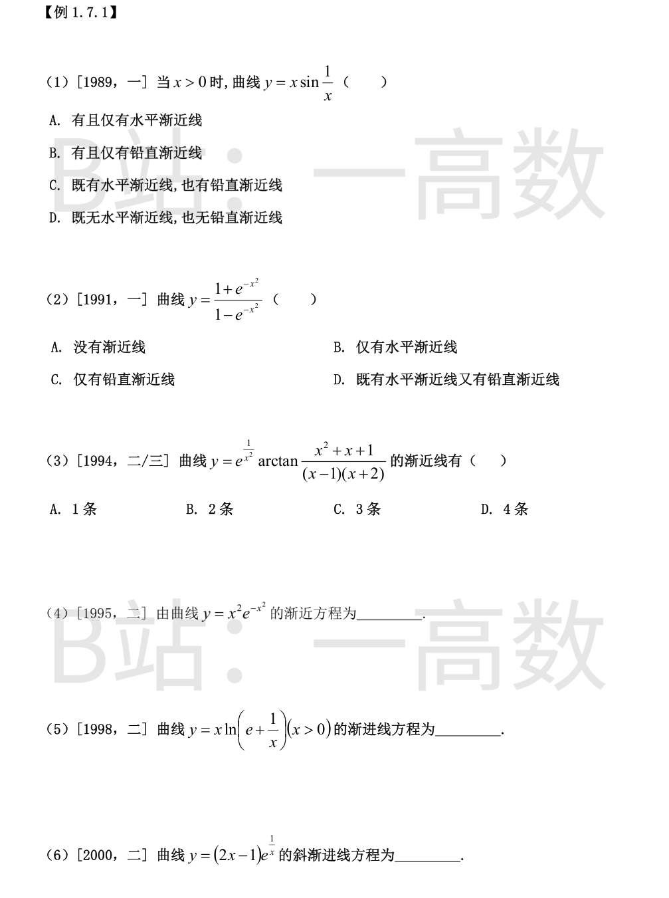
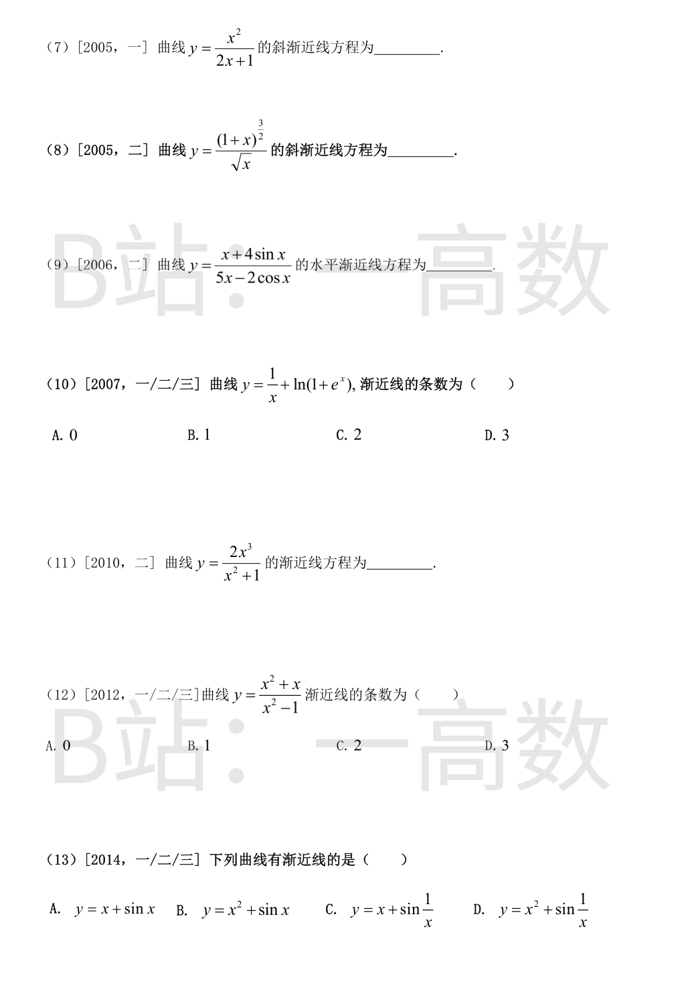
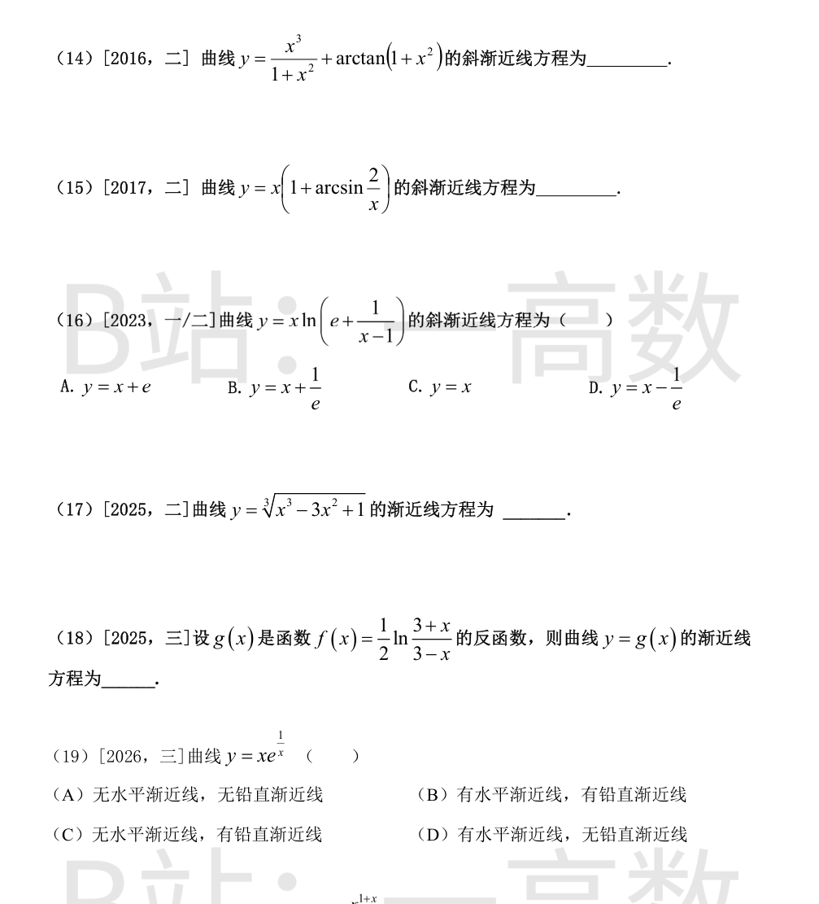

$$\lim_{x\to+\infty}y=\lim_{x\to+\infty}x\sin\frac1x=\lim_{x\to+\infty}\frac{\sin\frac1x}{\frac1x}=1,$$
故有水平渐近线 y=1。
x\to0^+ 时 \sin\frac1x 有界而 x\to0，故 y\to0，曲线不趋于无穷，无铅直渐近线；又定义域为 x>0，无其他无穷间断点，也无斜渐近线。
故该曲线**有且仅有水平渐近线**，选 **A**。
**水平**：x\to\pm\infty 时 e^{-x^2}\to0，
$$\lim_{x\to\infty}\frac{1+e^{-x^2}}{1-e^{-x^2}}=\frac{1+0}{1-0}=1,$$
得水平渐近线 y=1。
**铅直**：x\to0 时 e^{-x^2}\to1，分母 1-e^{-x^2}\to0^+（x\neq0 时 e^{-x^2}<1），分子 \to2，故 y\to+\infty，得铅直渐近线 x=0。
既有水平又有铅直渐近线，选 **D**。
**水平**：x\to\infty 时 e^{1/x^2}\to1，且
$$\frac{x^2+x+1}{(x-1)(x+2)}=\frac{x^2+x+1}{x^2+x-2}\to1\ \Rightarrow\ \arctan\to\arctan1=\frac{\pi}{4},$$
得水平渐近线 y=\dfrac{\pi}{4}（两侧同一条）。
**铅直 x=1**：x\to1 时 e^{1/x^2}\to e，x^2+x+1\to3 而 (x-1)(x+2)\to0，arctan\to\pm\dfrac{\pi}{2}，故
$$y\to\pm\frac{e\pi}{2}\quad(x\to1^{\pm}),$$
趋于无穷，x=1 为铅直渐近线。
**铅直 x=-2**：同理 x^2+x+1\to4-2+1=3\neq0，(x+2)\to0，arctan\to\pm\dfrac{\pi}{2}，y\to\pm\dfrac{e^{1/4}\pi}{2}，x=-2 为铅直渐近线。
共 **3 条**渐近线，选 **C**。
【仲裁修正】独立校验发现分歧，经仲裁重解，以本答案为准：x→1、x=-2 处 arctan 因子有界（→±π/2）而 e^{1/x²}→e 或 e^{1/4}，两侧极限为有限值 ±eπ/2、±e^{1/4}π/2，并非渐近线；真正的铅直渐近线是 x=0（e^{1/x²}→+∞ 且 arctan→arctan(-1/2)≠0，y→-∞），故共 2 条选 B
$$\lim_{x\to\pm\infty}x^2e^{-x^2}=\lim_{x\to\pm\infty}\frac{x^2}{e^{x^2}}=0,$$
（幂函数比对数、指数函数低阶，或连续用洛必达 \lim\dfrac{2x}{2xe^{x^2}}=\lim\dfrac{1}{e^{x^2}}=0）。
得水平渐近线 **y=0**（x\to+\infty 与 x\to-\infty 同一条）。函数处处有定义，无铅直渐近线；无斜渐近线。故渐近线方程为 y=0。
x\to+\infty（定义域限制下只考虑此方向）：
$$k=\lim_{x\to+\infty}\frac yx=\lim_{x\to+\infty}\ln\left(e+\frac1x\right)=1.$$
$$b=\lim_{x\to+\infty}(y-x)=\lim_{x\to+\infty}x\ln\frac{e+\frac1x}{e}=\lim_{x\to+\infty}x\ln\left(1+\frac{1}{ex}\right).$$
由 \ln(1+u)\sim u（u\to0），u=\dfrac{1}{ex}\to0，故
$$b=\lim_{x\to+\infty}x\cdot\frac{1}{ex}=\frac1e.$$
得斜渐近线 **y=x+\dfrac1e**。
另查铅直：x\to0^+ 时令 t=\dfrac1x\to+\infty，y=\dfrac{\ln(e+t)}{t}\to0（\dfrac{\ln t}{t}\to0），不产生铅直渐近线。故全部渐近线为 y=x+\dfrac1e。
$$k=\lim_{x\to\infty}\frac yx=\lim_{x\to\infty}\left(2-\frac1x\right)e^{1/x}=2.$$
令 t=\dfrac1x\to0：
$$b=\lim_{x\to\infty}\left[(2x-1)e^{1/x}-2x\right]=\lim_{t\to0}\frac{\frac2t e^t-e^t-2}{t}=\lim_{t\to0}\frac{2e^t-te^t-2}{t}.$$
泰勒展开 e^t=1+t+\dfrac{t^2}{2}+\dfrac{t^3}{6}+o(t^3)：
$$2e^t-te^t-2=\left(2+2t+t^2+\frac{t^3}{3}\right)-\left(t+t^2+\frac{t^3}{2}\right)-2+o(t^3)=t+o(t^2),$$
故
$$b=\lim_{t\to0}\frac{t+o(t^2)}{t}=1.$$
斜渐近线为 **y=2x+1**。（另：x\to0^+ 时 y\to-\infty，有铅直渐近线 x=0，但题目只求斜渐近线。）
带余除法：
$$x^2=(2x+1)\left(\frac x2-\frac14\right)+\frac14\ \Rightarrow\ y=\frac{x^2}{2x+1}=\frac x2-\frac14+\frac{1}{4(2x+1)}.$$
x\to\infty 时余项 \dfrac{1}{4(2x+1)}\to0，故斜渐近线为
$$y=\frac x2-\frac14.$$
（该曲线另有铅直渐近线 x=-\dfrac12，题目只问斜渐近线。）
$$k=\lim_{x\to+\infty}\frac yx=\lim_{x\to+\infty}\frac{(1+x)^{3/2}}{x^{3/2}}=\lim_{x\to+\infty}\left(1+\frac1x\right)^{3/2}=1.$$
$$b=\lim_{x\to+\infty}(y-x)=\lim_{x\to+\infty}x\left[\left(1+\frac1x\right)^{3/2}-1\right].$$
令 t=\dfrac1x\to0^+，用导数定义（或 (1+t)^\alpha-1\sim\alpha t）：
$$b=\lim_{t\to0^+}\frac{(1+t)^{3/2}-1}{t}=\left[(1+t)^{3/2}\right]'_{t=0}=\frac32.$$
故斜渐近线为 **y=x+\dfrac32**。
分子分母同除以 x：
$$\lim_{x\to\infty}\frac{x+4\sin x}{5x-2\cos x}=\lim_{x\to\infty}\frac{1+4\cdot\frac{\sin x}{x}}{5-2\cdot\frac{\cos x}{x}}=\frac{1+0}{5-0}=\frac15,$$
其中 |\sin x|\le1、|\cos x|\le1 有界，故 \dfrac{\sin x}{x}\to0、\dfrac{\cos x}{x}\to0（有界量乘无穷小）。
x\to+\infty 与 x\to-\infty 极限相同，故水平渐近线为 **y=\dfrac15**（一条）。
**铅直**：x\to0^+ 时 \dfrac1x\to+\infty，\ln(1+e^x)\to\ln2，y\to+\infty，得铅直渐近线 x=0。
**水平（x\to-\infty）**：\dfrac1x\to0，\ln(1+e^x)\to\ln1=0，y\to0，得水平渐近线 y=0。
**斜（x\to+\infty）**：利用 \ln(1+e^x)=x+\ln(1+e^{-x})，
$$k=\lim_{x\to+\infty}\frac yx=\lim_{x\to+\infty}\left[\frac{1}{x^2}+\frac{x+\ln(1+e^{-x})}{x}\right]=0+1+0=1,$$
$$b=\lim_{x\to+\infty}(y-x)=\lim_{x\to+\infty}\left[\frac1x+\ln(1+e^{-x})\right]=0+0=0,$$
得斜渐近线 y=x。
共 **3 条**，选 **D**。
$$k=\lim_{x\to\infty}\frac yx=\lim_{x\to\infty}\frac{2x^2}{x^2+1}=2,$$
$$b=\lim_{x\to\infty}\left(\frac{2x^3}{x^2+1}-2x\right)=\lim_{x\to\infty}\frac{2x^3-2x^3-2x}{x^2+1}=\lim_{x\to\infty}\frac{-2x}{x^2+1}=0.$$
得斜渐近线 **y=2x**（x\to+\infty 与 x\to-\infty 同一条）。分母 x^2+1>0 恒正无零点，无铅直渐近线；x\to\infty 时 y\to\infty，无水平渐近线。故全部渐近线为 y=2x。
$$y=\frac{x(x+1)}{(x-1)(x+1)}.$$
**水平**：x\to\infty 时 y\to1，得 y=1。
**x=1**：分子\to2，分母\to0，y\to\infty，得铅直渐近线 x=1。
**x=-1**：分子分母同时为零，但当 x\neq-1 时 y=\dfrac{x}{x-1}，x\to-1 时 y\to\dfrac{-1}{-2}=\dfrac12，极限存在，x=-1 为可去间断点，**不是**渐近线。
共 **2 条**，选 **C**。
四条曲线均在 \mathbb{R} 上有定义，无铅直渐近线；x\to\infty 时均无有限极限，无水平渐近线。逐一考察斜渐近线 y=kx+b：
- **A**：k=\lim\dfrac{x+\sin x}{x}=1，但 b=\lim(x+\sin x-x)=\lim\sin x 不存在，无斜渐近线。
- **B**：\lim\dfrac{x^2+\sin x}{x}=\infty，k 不存在，无斜渐近线。
- **C**：k=\lim\dfrac{x+\sin\frac1x}{x}=1，b=\lim\left(x+\sin\frac1x-x\right)=\lim\sin\frac1x=0，有斜渐近线 **y=x**。
- **D**：同 B，k=\infty 不存在，无斜渐近线。
选 **C**。
$$k=\lim_{x\to\infty}\frac yx=\lim_{x\to\infty}\left[\frac{x^2}{1+x^2}+\frac{\arctan(1+x^2)}{x}\right]=1+0=1.$$
$$b=\lim_{x\to\infty}(y-x)=\lim_{x\to\infty}\left[\frac{x^3}{1+x^2}-x+\arctan(1+x^2)\right].$$
其中
$$\frac{x^3}{1+x^2}-x=\frac{x^3-x-x^3}{1+x^2}=\frac{-x}{1+x^2}\to0,$$
且 x\to\pm\infty 时 1+x^2\to+\infty，\arctan(1+x^2)\to\dfrac{\pi}{2}，故 b=0+\dfrac{\pi}{2}=\dfrac{\pi}{2}（两方向相同）。
斜渐近线为 **y=x+\dfrac{\pi}{2}**。
$$k=\lim_{x\to\infty}\frac yx=\lim_{x\to\infty}\left(1+\arcsin\frac2x\right)=1.$$
$$b=\lim_{x\to\infty}(y-x)=\lim_{x\to\infty}x\arcsin\frac2x.$$
令 u=\dfrac2x\to0，由 \arcsin u\sim u：
$$b=\lim_{u\to0}2\cdot\frac{\arcsin u}{u}=2.$$
斜渐近线为 **y=x+2**（定义域 |x|\ge2，x\to\pm\infty 两方向同一条）。
$$k=\lim_{x\to\infty}\frac yx=\lim_{x\to\infty}\ln\left(e+\frac{1}{x-1}\right)=\ln e=1.$$
$$b=\lim_{x\to\infty}(y-x)=\lim_{x\to\infty}x\ln\frac{e+\frac{1}{x-1}}{e}=\lim_{x\to\infty}x\ln\left(1+\frac{1}{e(x-1)}\right).$$
由 \ln(1+u)\sim u，u=\dfrac{1}{e(x-1)}\to0：
$$b=\lim_{x\to\infty}\frac{x}{e(x-1)}=\frac1e.$$
斜渐近线 y=x+\dfrac1e，选 **B**。
$$k=\lim_{x\to\infty}\frac yx=\lim_{x\to\infty}\sqrt[3]{1-\frac3x+\frac{1}{x^3}}=1.$$
（x\to-\infty 时根号内仍 \to1，三次根号不改变结论，k=1。）
由泰勒展开 (1+t)^{1/3}=1+\dfrac t3+o(t)（t\to0），取 t=-\dfrac3x+\dfrac{1}{x^3}\to0：
$$y=x\left[1+\frac13\left(-\frac3x+\frac{1}{x^3}\right)+o\left(\frac1x\right)\right]=x\left[1-\frac1x+o\left(\frac1x\right)\right]=x-1+o(1),$$
故
$$b=\lim_{x\to\infty}(y-x)=-1.$$
x\to-\infty 侧：令 x=-u\ (u\to+\infty)，y=-\sqrt[3]{u^3+3u^2-1}=-u\left(1+\frac3u-\frac{1}{u^3}\right)^{1/3}=-u-1+o(1)=x-1+o(1)，同得 b=-1。
斜渐近线 **y=x-1**（两侧公共的一条）；无水平、铅直渐近线。
f 的定义域为 (-3,3)，f'(x)=\dfrac12\left(\dfrac{1}{3+x}+\dfrac{1}{3-x}\right)=\dfrac{3}{9-x^2}>0，f 严格单调增；x\to3^- 时 f\to+\infty，x\to-3^+ 时 f\to-\infty，值域为 \mathbb{R}，故 g 的定义域为 \mathbb{R}。
求反函数：由 y=\dfrac12\ln\dfrac{3+x}{3-x} 得 e^{2y}=\dfrac{3+x}{3-x}，解出
$$x=3\cdot\frac{e^{2y}-1}{e^{2y}+1}\quad\Longrightarrow\quad g(x)=3\cdot\frac{e^{2x}-1}{e^{2x}+1}.$$
考察无穷远极限：
$$\lim_{x\to+\infty}g(x)=3\cdot\lim_{x\to+\infty}\frac{e^{2x}-1}{e^{2x}+1}=3,\qquad \lim_{x\to-\infty}g(x)=3\cdot\frac{0-1}{0+1}=-3.$$
得两条水平渐近线 **y=3 与 y=-3**。g 在 \mathbb{R} 上连续有界，无铅直渐近线，也无斜渐近线。
**水平**：x\to\pm\infty 时 e^{1/x}\to1，y\sim x\to\infty，无水平渐近线。
**铅直**：x\to0^+ 时 e^{1/x}\to+\infty，且 x\to0^+ 速率远不及指数增长，y=xe^{1/x}\to+\infty，故 x=0 为铅直渐近线（x\to0^- 时 e^{1/x}\to0，y\to0，只需单侧无穷即可）。
故**无水平渐近线，有铅直渐近线**，选 **C**。
（附注：x\to+\infty 时 k=1，b=\lim x(e^{1/x}-1)=1，另有斜渐近线 y=x+1，但选项只问水平与铅直。）
**改写**：
$$y=\frac{x\cdot x^x}{(1+x)^x}=x\left(\frac{x}{1+x}\right)^{x}=x\left(1+\frac1x\right)^{-x}.$$
**求 k**：
$$k=\lim_{x\to+\infty}\frac yx=\lim_{x\to+\infty}\left(1+\frac1x\right)^{-x}=e^{-1}=\frac1e.$$
**求 b**：令 t=\dfrac1x\to0^+，
$$b=\lim_{x\to+\infty}\left[x\left(1+\frac1x\right)^{-x}-\frac xe\right]=\lim_{t\to0^+}\frac{(1+t)^{-1/t}-e^{-1}}{t}.$$
由泰勒展开 \dfrac{\ln(1+t)}{t}=1-\dfrac t2+\dfrac{t^2}{3}+o(t^2)，故
$$(1+t)^{-1/t}=\exp\left(-\frac{\ln(1+t)}{t}\right)=\exp\left(-1+\frac t2+o(t)\right)=e^{-1}\left[1+\frac t2+o(t)\right],$$
代入：
$$b=\lim_{t\to0^+}\frac{e^{-1}\left[\frac t2+o(t)\right]}{t}=\frac{1}{2e}.$$
**斜渐近线方程为**
$$y=\frac{x}{e}+\frac{1}{2e}.$$
（易错点：对 b 用 e^u-1\sim u 的一阶等价会把主项 \ln(1+x) 保留下来而误判极限不存在，必须将指数展开到 t 的一次项使主项相消。）